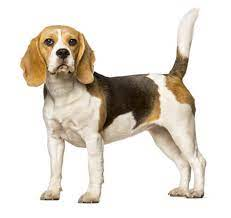

Beagle

Origen
A mediados del siglo XVI, los perros empezaron a clasificarse por su finalidad, es decir: perros de vista, de olfato, etc. En aquella misma época, a un pequeño perro, criado para matar conejos y liebres, se le puso el nombre de Begles, un término francés que significa «boca grande»
Caracteristicas
- Miden de 33 a 40 cm y pesan de 10 o 11 kg.
- Perro mediano.
- Perro muy ladrador.
- Le gusta pasear una o dos horas al día.
- Le gustan los paseos activos.
- Puede necesitar entrenamiento para vivir con otras mascotas.
Personalidad
Los beagles tienen buen carácter y si se crían para ser animales de manada, se llevarán bien con la mayoría de los perros. Les encantan los niños, pero en el caso de los gatos, deben estar en contacto con ellos desde cachorros para tener buenas relaciones con los felinos. El beagle es un perro guardián fantástico que ladrará ante cualquier cosa inusual, aunque una vez el ladrón haya entrado, seguramente preferirá jugar con él.